Donjon Ledger CTF 2020: Random Learn
Introduction
This article presents one way of solving the Random Learn side channel challenge released during the Donjon Ledger 2020 CTF. In side channel challenges, the goal is to retrieve the secret key of a cryptographic algorithm using physical measurements performed while the device was operating (time, power, electromagnetic emanations, temperature…).
Before this competition, our team had almost zero experience with side channel attacks. We learned the basics by reading papers and applying them to the different challenges proposed during the competition. In this article, I describe my understanding of the concepts and techniques we used with a beginner’s point of view. As a consequence, the methodology presented here may appear a bit approximative or even wrong to experienced readers. Do not hesitate to ping me on Twitter if some stuff I write needs to be corrected.
Kudos to my teammate i27, who did an important part of the work for this challenge and took the time to explain me his approach so we could work together to get the flag.
Initial data
The target for this challenge is an AES execution on a “non-secure” MCU (Microcontroller Unit). The following datasets are provided:
variable_k_p: 200000 power traces with random known plaintexts and keys;unknown_k: 200 power traces where known plaintexts have been encrypted with the same unknown key.
The goal is to retrieve the unknown key used in the second dataset. It appears that the spirit of the challenge is to use the first dataset to infer some relations between[power, plaintext, keys]and apply them to the second dataset to guess the unknown key. In the next section, we start by working on the first dataset:
import numpy as np
power = np.load("./variable_k_p/traces.npy")
values = np.load("./variable_k_p/values.npy")What exactly are we looking at ?
Let’s plot one power trace to get a better idea of which part of the AES execution we are dealing with:
import matplotlib.pyplot as plt
plt.plot(power[0])
plt.title('power[0]')
plt.show()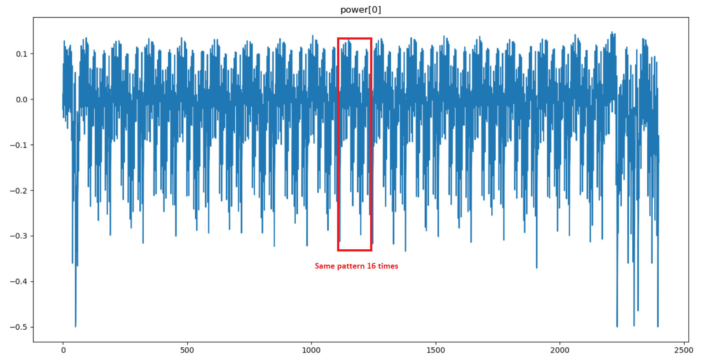
A pattern is repeated 16 times in the power trace. This shows that each byte of the AES state is manipulated independently, meaning that we are probably dealing with a 8-bit MCU (on a 32-bits MCU, we might have observed one pattern repeated 4 times). Moreover, the description of the challenge indicates that the “beginning of the AES execution” was captured, so we are probably somewhere inside the first round.
Since it’s a classic approach to target SBox outputs in side channel attacks, I am going to make the hypothesis that the power measurement was performed during the SubBytes operation (one pattern = one SBox substitution).
Correlation Power Analysis (CPA) 101
The fundamental observation exploited in power-based side channel attacks is that, at any point in time, there is a direct relation between the values of the bits transiting on data buses and the power consumption of the device. To put it in a different way, during the AES computation, the power consumption will vary depending on the value of the data manipulated by the algorithm.
One very powerful analysis technique is the Correlation Power Analysis (CPA). Given a sufficient amount of power traces, this technique applies simple, yet powerful statistical tools to extract bytes of an unknown key.
To perform a CPA, you first need to define a model for the power consumption. A simple approach that is often used is to model the power consumption at time t as the hamming weight (number of 1 bits) of the data unit (a byte on a 8-bit microcontroller) manipulated at time t.
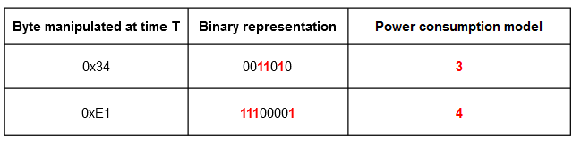
Note : The raw byte value can also be chosen in place of the hamming weight. Both are used in the resolution of this challenge and give interesting results.
Then, you must pick an intermediate value that you will target in the cryptographic algorithm. The idea is to choose a value that depends on the key so you can use it to make key guesses later in the attack. In the case of AES, interesting targets can be identified by looking at the SubBytes operation of the first round:
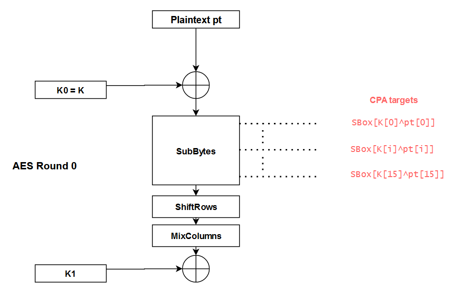
By targeting a byte of the state at each SBox output, we can use the CPA to guess the key bytesK[i]one by one. The different steps to perform this attack are the following ones:
- Measure the real power consumption
Pfor many different plaintextspt; - For each key guess K_guess:
- Compute the theoretical power consumption
P_th_guess = hamming(SBox[pt[i]^K_guess])for all the plaintextspt - For each point in time t, compute the correlation between
PandP_th_guessusing the Pearson’s coefficient.
- Compute the theoretical power consumption
- The correlation graph that contains the highest correlation value corresponds to
K_guess = K[i]
What is really mind-blowing with this attack is that we don’t even need to know at what timeSBox[pt[i]^K[i]]is computed on the real power trace. Indeed, the K_guessthat yields the highest correlation value gives both the value of K[i]AND the time at whichSBox[pt[i]^K[i]]is computed, thanks to the position of the spike.
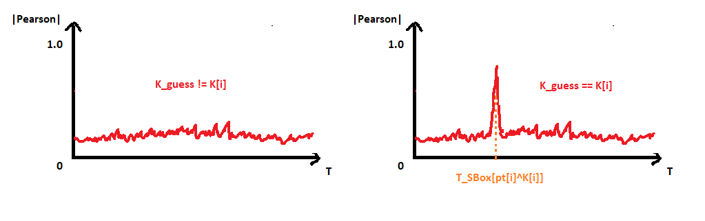
Given a sufficient amount of power traces, this approach can be used to easily recover the entire key. Colin O’Flynn, the father of the ChipWhisperer, has made an excellent introduction video on the subject. It really helped me a lot to understand a bit of the magic behind side channel attacks. If you are unfamiliar with this topic, I encourage you to watch his video and come back here after.
First (naive) CPA attempt
Now that we have a bit more background on CPA attacks, let’s get back to the challenge.
The first step of the analysis is to verify on the dataset with known[plaintext, key]that we obtain high correlations at the output of each SBox. We will then be able to use these leakage points to perform the CPA attack on the dataset with the unknown key.
As explained in the previous section, we will model our theoretical power consumption at time t as the hamming weight of the byte manipulated at time t.
Let’s start with the first SBox. We compute P_th = hamming(SBox[pt[0]^K[0]])for every plaintext and then calculate the correlation with the real power at each point in time.
def sbox_output_corr(power, values, idx):
# Compute theoretical power for SBox idx output
P_th = []
for i in range(len(power)):
pt = values[i]["plaintext"]
K = values[i]["key"]
P_th.append(hamming(SBox[pt[idx]^K[idx]])) # hamming power model
P_th = np.array(P_th)
# Compute pearson correlation between P_th and P at each point in time
P_at_t = np.transpose(power)
correlations = []
for x in P_at_t:
corr = abs(np.corrcoef(x, P_th)[0][1])
correlations.append(corr)
# Plot
plt.plot(correlations)
plt.ylim(top=1)
plt.show()
# Look for high correlations at the output of the first SBox
sbox_output_corr(power[:2000], values[:2000], 0) # we don't need all the 200000 traces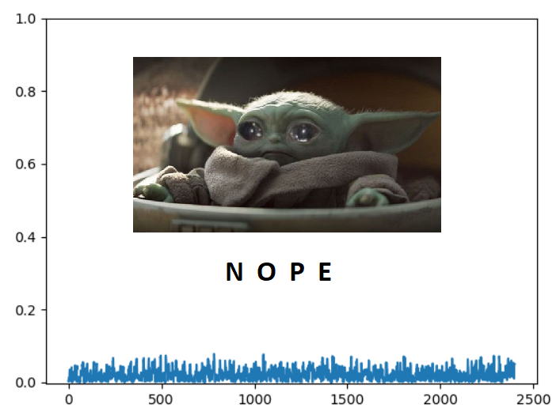
Aaaaaaand… it didn’t work. Unfortunately, there is no correlation spike hidden behind baby Yoda. The same results is obtained for the 16 outputs of the SBox. Just in case, we also performed the following tests:
- Model the power with the raw value of the state byte instead of the hamming weight;
- Looking for correlations using the values of the key bytes
K[i]instead of the SBox outputs.
The first test did not give anything interesting. For the second test, none of the key bytes yielded a high correlation exceptK[15]:
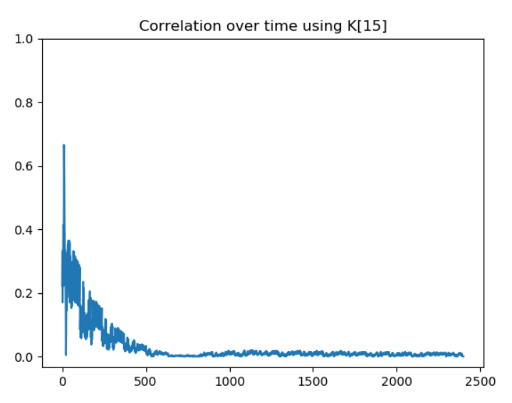
So it seems that we are able to leak the value ofK[15]. However, without any more information, we are not going to go very far. At this point, we didn’t really know what was wrong with our approach. But at the same time, the challenge would not be worth 300 points if the classic CPA was working directly.
The most probable hypothesis is that they are some mitigations to prevent the SBox outputs from leaking. Since, the description mentions a “non-secure MCU”, those potential mitigations are likely implemented at the software level. Time for a bit of Googling !
Masking schemes
After doing some research on the subject, it appears that there are indeed a lot of ways to protect an AES implementation against CPA attacks. One popular family of mitigations is called “masking”. In masking schemes, the idea is to randomly split every sensitive intermediate variable occurring in the computation into n+1 shares, where n is called the masking order. An example of a masked AES with order 1 is used in the section 2.5 of the article Study of Deep Learning Techniques for Side-Channel Analysis and Introduction to ASCAD Database. Since the order of the mask is 1 in this example, each byte of the sensitive data is split into two parts:
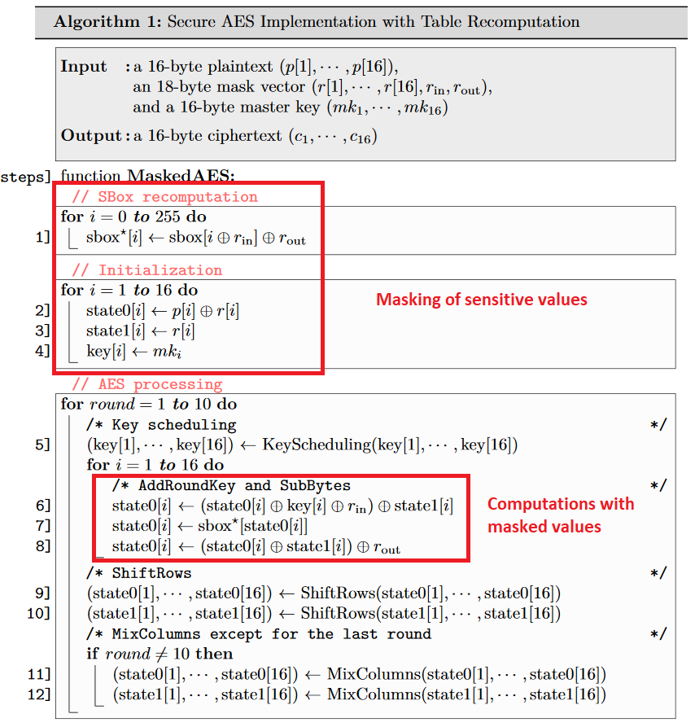
Assuming that the AES implementation in this challenge is protected with a similar masking scheme (this assumption may be wrong), let’s see if we get some results by performing a second order attack on the dataset.
Looking for order 2 leakage points
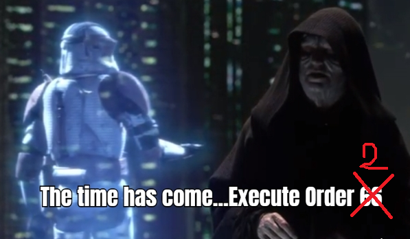
In second order attack, the idea is to combine two points (t1, t2) of the power trace where the masked values are manipulated to remove the effect of the masking. For the combining function, two main candidates seem to be used:
- Absolute Difference:
D(t1, t2) = |P(t2) - P(t2)| - Centered Product:
CP(t1, t2) = (P(t2)-E[P(t2)])*(P(t1)-E[P(t1)])whereE[P(t)]is the mean of the power P at time t
The authors of the article Statistical Analysis of Second Order Differential Power Analysis argue that the Centered Product often yields better results. Let’s try to apply that approach to our power traces.
Once again we start by attacking the output of the first SBox. To do so, we compute the Centered ProductCP(t1, t2)for every(t1, t2)couple and look for high correlations with P_th = SBox[pt[0]^K[0]]. Since we are attacking the first SBox, we can save some computing time by just looking at the beginning of the trace (t < 200).
Note: You may wonder why we use the raw byte value instead of the hamming weight for the power model. Actually, we tried and used both during the CTF, but overall the raw byte value gave better correlations in most cases.
def second_order_corr(values, power, idx, window_len):
# Compute the power_centered_t for each t over all the traces
# power_centered_t[i] = [Power without noise at t = i for trace 0, Power without noise at t = i for trace 1, ...etc.]
power_mean = np.mean(power, 0)
power_centered = np.apply_along_axis(lambda x: x - power_mean, 1, power)
power_centered_t = np.transpose(power_centered)
# Compute the Centered Product for all (t1, t2) in [0, window_len]^2
CP = []
for t1 in range(window_len):
for t2 in range(window_len):
# CP_t1_t2 == CP_t2_t1, we don't need to do the computation twice
if (t1 <= t2):
CP_t1_t2 = power_centered_t[t1] * power_centered_t[t2]
CP.append(((t1,t2), CP_t1_t2))
CP = np.array(CP)
# Compute theoretical power for SBox idx output
P_th = []
for i in range(len(power)):
pt = values[i]["plaintext"]
K = values[i]["key"]
P_th.append(SBox[pt[idx]^K[idx]]) # raw byte value power model
P_th = np.array(P_th)
# Correlation between P_th and CP
correlations = [[0 for i in range(window_len)] for j in range(window_len)]
for x in CP:
(t1, t2) = x[0]
CP_t1_t2 = x[1]
corr = abs(np.corrcoef(CP_t1_t2, P_th)[1][0])
correlations[t1][t2] = corr if not np.isnan(corr) else 0
correlations = np.array(correlations)
# Get the couple (t1, t2) that gives the best correlation
best_corr_idx = np.unravel_index(np.argmax(correlations, axis=None), correlations.shape)
# Plot correlation heat map
heatmap2d(correlations, best_corr_idx)
return best_corr_idx, correlations[best_corr_idx]
# Look at the output of the first SBox (0) which is a the beginning of the trace (t < 200)
second_order_corr(values[:2000], power[:2000], 0, 200)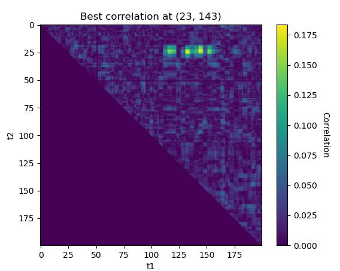
Nice, the approach seems to work ! We found some interesting correlations around (23, 143). Let’s see what happens if we repeat the experiment on the second SBox output:
# Look at the output of the second SBox (1) which is a further on the power trace (t < 400)
second_order_corr(values[:2000], power[:2000], 1, 400)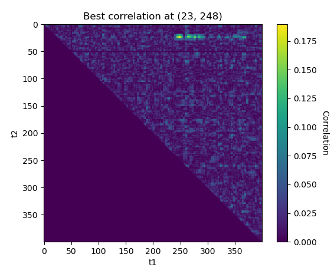
The best leakage point is(23,243)for the second SBox. We obtaint1 = 23once again, it cannot be a mere coincidence ! This seems to confirm that the AES is protected with a masking scheme with the mask applied att1 = 23and the masked value manipulated during t2at the output of each SBox.
Now that we know that the masking is applied around t1 = 23, we can fix the value of t1 and compute t2 for each SBox.
def second_order_known_t1(values, power, idx, window_len):
...
# Compute the Centered Product
CP_t = []
for t1 in range(22, 26): # we know that masks are applied at t1 ~= 23
for t2 in range(window_len):
if (t1 <= t2):
CP_t1_t2 = power_centered_t[t1] * power_centered_t[t2]
CP_t.append(((t1,t2), CP_t1_t2))
...
def get_leak_indexes(values, power):
leaks = []
for SBox_i in range(16):
# window_len = 2400 to look at the whole trace
leaks.append(second_order_known_t1(values, power, SBox_i, 2400))
# Print results
for i in range(16):
print("Leak SBox %02d : %s. (corr = %0.4f)"%(i, leaks[i][0], leaks[i][1]))
# return leak indexex
return [x[0] for x in leaks]
get_leak_indexes(values[:2000], power[:2000])Leak SBox 00 : (23, 143). (corr = 0.1838)
Leak SBox 01 : (23, 248). (corr = 0.1899)
Leak SBox 02 : (23, 396). (corr = 0.1994)
Leak SBox 03 : (24, 528). (corr = 0.1984)
Leak SBox 04 : (23, 660). (corr = 0.1654)
Leak SBox 05 : (24, 795). (corr = 0.1970)
Leak SBox 06 : (24, 924). (corr = 0.1780)
Leak SBox 07 : (25, 1067). (corr = 0.1878)
Leak SBox 08 : (24, 1188). (corr = 0.1806)
Leak SBox 09 : (25, 1320). (corr = 0.2026)
Leak SBox 10 : (24, 1463). (corr = 0.1940)
Leak SBox 11 : (23, 1569). (corr = 0.1903)
Leak SBox 12 : (23, 1735). (corr = 0.1907)
Leak SBox 13 : (24, 1832). (corr = 0.1817)
Leak SBox 14 : (24, 1991). (corr = 0.1773)
Leak SBox 15 : (24, 2096). (corr = 0.1814)If we plot all thet = t2lines on top of any power trace, we can see that they match the output of each SBox:
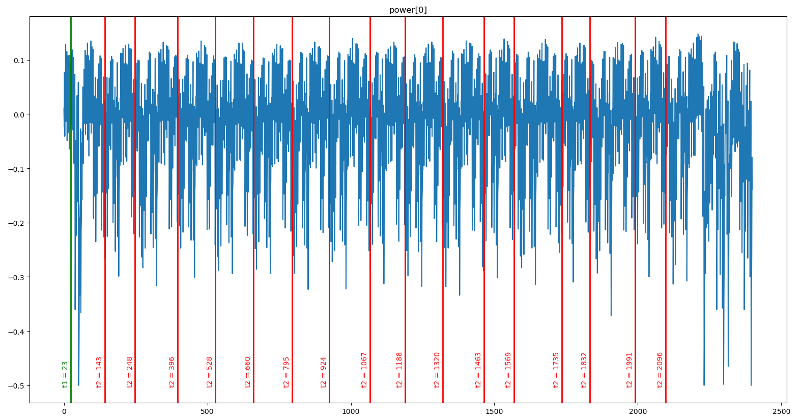
Leaking the unknown key
Thanks to the work done on the first dataset with known[plaintext, key], we have 16 leakage pointsL[0], L[1], ..., L[16]that we can use to guess the value of each key byte on the second dataset.
import numpy as np
power_u = np.load("./unknown_k/traces.npy")
values_u = np.load("./unknown_k/values.npy")For each unknown key byteK[i], we use the leakage pointL[i] = (t1_i, t2_i)to perform a CPA attack as described at the beginning of the article. The only difference is that here we have already chosen the points in time that should give the highest correlation using the first dataset.
For each key guess K_guess:
- Compute the theoretical power consumption
P_th_guess = SBox[pt[i]^K_guess](raw byte model) for all the plaintextspt - Compute the Centered Product
CP = CP(t1_i, t2_i)for all the plaintexts - Compute the correlation between
CPandP_th_guess - The highest correlation should correspond to
K_guess = K[i]
def do_cpa(values, power, idx, L):
# Compute centered product
power_mean = np.mean(power, 0)
power_centered = np.apply_along_axis(lambda x: x - power_mean, 1, power)
power_centered_t = np.transpose(power_centered)
CP = power_centered_t[L[0]] * power_centered_t[L[1]]
max_idx = None
max_corr = None
# For each key guess, compute theoretical power and correlation with CP
for K_guess in range(256):
# Theoritcal power for key guess
P_th_guess = []
for i in range(len(values["plaintext"])):
P_th_guess.append((SBox[K_guess ^ values["plaintext"][i][idx]]))
P_th_guess = np.array(P_th_guess)
# Correlation with CP
corr = abs(np.corrcoef(CP, P_th_guess)[1][0])
# Get maximum correlation
if max_corr == None or corr > max_corr:
max_idx = K_guess
max_corr = corr
print("Found max correlation for K[%d] = %s (%f)"%(idx, chr(max_idx), max_corr))
return chr(max_idx), max_corr# Get leaks using first dataset
N_traces = 10000
leaks = get_leak_indexes(values[:N_traces], power[:N_traces])
# CPA attack on each byte of the key for the second dataset
for i in range(16):
do_cpa(values_u, power_u, i, leaks[i])Found max correlation for K[0] = T (0.258149)
Found max correlation for K[1] = h (0.295765)
Found max correlation for K[2] = a (0.299622)
Found max correlation for K[3] = Õ (0.205122)
Found max correlation for K[4] = s (0.253593)
Found max correlation for K[5] = Ë (0.218147)
Found max correlation for K[6] = m (0.200352)
Found max correlation for K[7] = Ñ (0.212255)
Found max correlation for K[8] = (0.249555)
Found max correlation for K[9] = (0.243846)
Found max correlation for K[10] = ¨ (0.200326)
Found max correlation for K[11] = 0 (0.205650)
Found max correlation for K[12] = (0.201208)
Found max correlation for K[13] = (0.251059)
Found max correlation for K[14] = § (0.212484)
Found max correlation for K[15] = u (0.303568)Mmmmh, it seems that only some of the bytes are correct… Our approach does not work perfectly; probably because we only have 200 power traces for the unknown key. Still, it feels like we are pretty close to the solution and after all these efforts, we are not going to go home without the flag.
Time to get a bit dirty.
Using the (Brute)Force
First of all, we know that the AES key is the flag of the challenge, therefore it should be composed of printable characters.
Then, we observed that when modifying the number of tracesNused to compute the leakage points, the second coordinate t2 of some of these points would vary while others would remain unchanged. For instance:
N = 10000 => L[12] = (24, 1727) => K[12] = ' ' (0.201208)N = 50000 => L[12] = (24, 1716) => K[12] = g (0.27219)
But:
N = 10000 or N = 50000 => L[2] = (24, 396) => K[2] = a (0.299622 > 0.25)
This shows that the location of the leakage point is unstable for some SBox.
Another observation we made by experimenting a bit, was that using the hamming distance instead of the raw bytes during the CPA could sometimes give interesting results.
Therefore, we wrote a short script to do the CPA on all the points of a rectangle around each computed leakage point L, using both the raw byte value and the hamming weight. The idea is that if we are able to guess enough bytes of the key this way, we will be able to bruteforce the missing bytes by performing AES using a known[plaintext, ciphertext]couple.
def bruteforce_cpa(values, power, idx, L):
print("[*] Bruteforce K[%d]"%(idx), end= ' : ')
possible_k = dict()
# Define a bruteforce rectangle around the leaking point L
bf_t1_range = 3
bf_t2_range = 30
# Perform the CPA for all the points of the rectangle
# Select the potential key bytes that are printable and
# have a correlation > 0.25. The value has been defined
# by experimenting a bit and looking at the correlation
# value of the good and wrong looking key bytes
for t1 in range(L[0] - bf_t1_range, L[0] + bf_t1_range):
for t2 in range(L[1] - bf_t2_range, L[1] + bf_t2_range):
# Raw byte power model
(k, corr) = do_cpa(values, power, idx, [t1, t2], hamming_mode=False)
if corr > 0.25 and k in string.printable :
possible_k[k] = possible_k.get(k, 0) + 1
# Hamming power model
(k, corr) = do_cpa(values, power, idx, [t1, t2], hamming_mode=True)
if corr > 0.25 and k in string.printable :
possible_k[k] = possible_k.get(k, 0) + 1
# Sort possible keys by number of occurrences
possible_k = dict(sorted(possible_k.items(), key=lambda item: -item[1]))
print(possible_k)for i in range(16):
bruteforce_cpa(values_u, power_u, i, leaks[i])'''
[*] Bruteforce K[0] : {'T': 24, 'R': 8, ...} <- T
[*] Bruteforce K[1] : {'h': 12, '9': 7, ...} <- h (medium occurences, but "Thats" looks good)
[*] Bruteforce K[2] : {'a': 19, 'Z': 6, ...} <- a
[*] Bruteforce K[3] : {'F': 8, 't': 7, ...} <- t (F and t are close and have low occurences, but "Thats" looks good)
[*] Bruteforce K[4] : {'s': 25, 'J': 16, ...} <- s
[*] Bruteforce K[5] : {' ': 43, '\\': 13', ...} <- ' '
[*] Bruteforce K[6] : {'m': 10, 'I': 8, ...} <- (m, I) (medium occurrences)
[*] Bruteforce K[7] : {'`': 11, 'h': 5, ...} <- seems bad
[*] Bruteforce K[8] : {' ': 19, '[': 6, ...} <- ' '
[*] Bruteforce K[9] : {'M': 8, '3': 6, ...} <- (M, 3) with low occurrences -> seems bad
[*] Bruteforce K[10] : {'u': 19, 't': 9, ...} <- u
[*] Bruteforce K[11] : {'(': 13, '}': 3, ...} <- seems bad
[*] Bruteforce K[12] : {'X': 12, 'g': 11, 'M': 9,...} <- (X, g, M) (medium occurrences)
[*] Bruteforce K[13] : {' ': 30, 'A': 8, ...} <- ' '
[*] Bruteforce K[14] : {'`': 8, ...} <- seems bad
[*] Bruteforce K[15] : {'I': 9, 'u': 8, ...} <- (I, u) (low occurrences but we got some pretty high correlation (0.30) for 'u' during the first try)
'''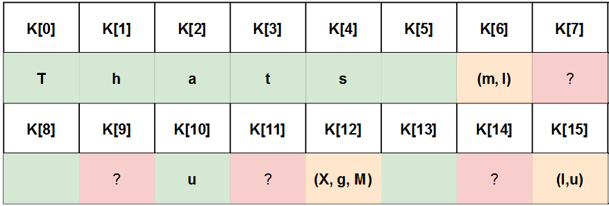
It worked ! We are now pretty confident about 9 bytes of the key and have few candidates for 3 other bytes. This is more than enough information to perform a quick dirty inefficient AES bruteforce with Python on a known[plaintext, ciphertext] couple:
from Crypto.Cipher import AES
import sys
# Known plaintext/ciphetext
pt = bytes([67, 62, 206, 141, 38, 55, 87, 2, 178, 64, 179, 137, 155, 28, 17, 169])
ct = bytes([125, 50, 240, 162, 229, 37, 237, 229, 142, 159, 255, 156, 135, 231, 51, 211])
# Dirty BF
# The key seems to be made of space and letters
unknown_byte_search_space = list(map(chr, range(0x41, 0x7B))) + [' ']
for k6 in 'mI':
for k7 in unknown_byte_search_space:
for k9 in unknown_byte_search_space:
for k11 in unknown_byte_search_space:
for k12 in 'XgM':
for k14 in unknown_byte_search_space:
for k15 in 'Iu':
key = 'Thats '+k6+k7+' '+k9+ 'u'+k11+k12+' '+k14+k15
cipher = AES.new(key, AES.MODE_ECB)
if cipher.encrypt(pt) == ct:
print("Flag : "+key)
sys.exit(0)Flag : That's my Kung FuConclusion
After a lot of paper reading and experimentation, we manage to solve this challenge with no prior side channel experience. Thanks to the Donjon Ledger team for organizing this CTF and providing such a great learning opportunity.
On a side note, it’s likely that the second order CPA was not the intended solution. Indeed, the title and set-up of the challenge were more hinting toward a template / machine learning based solution. Moreover, we obviously abused the fact that the key was composed of printable characters in our approach. I hope that other write ups will be published so we can have more details about the intended solutions.
One more thing. While I was writing this article, I stumbled upon something that could have saved me a bit of time during the challenge:
Well, I guess I need to do crypto more often…